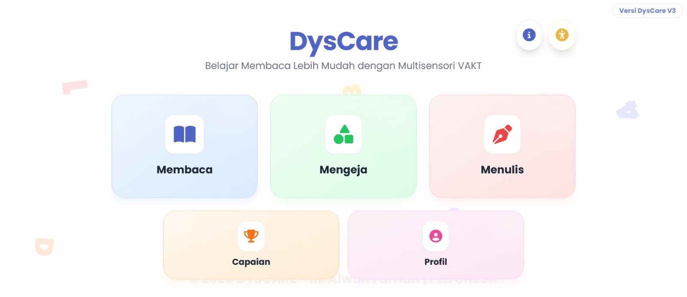
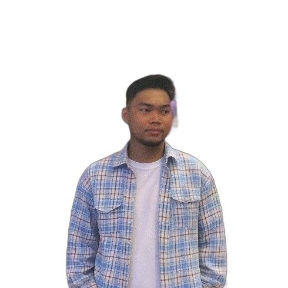
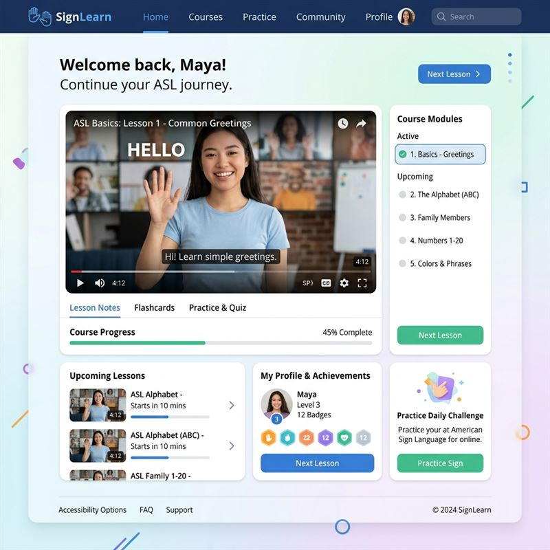
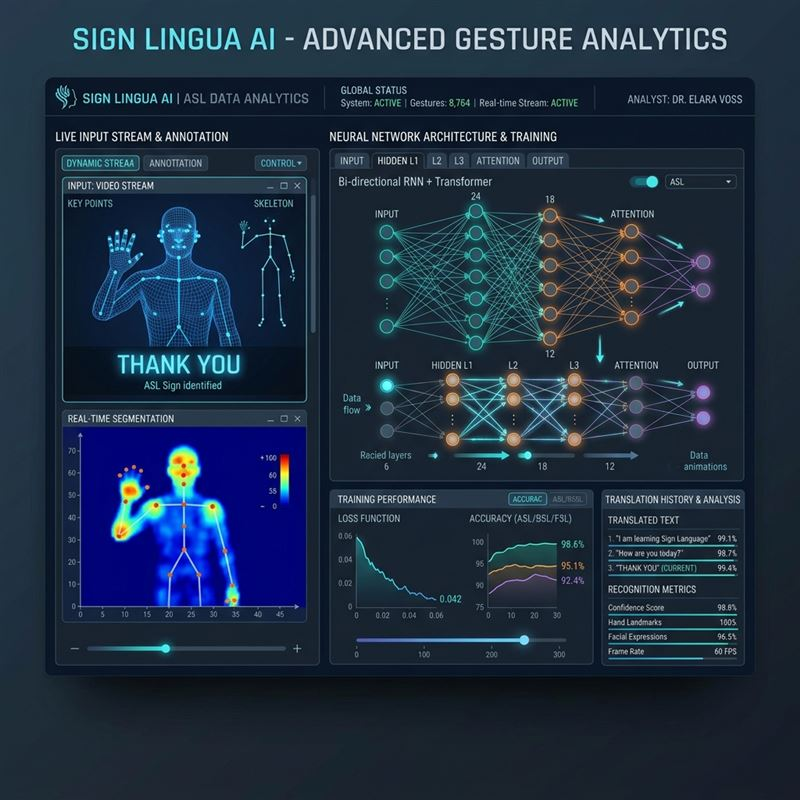
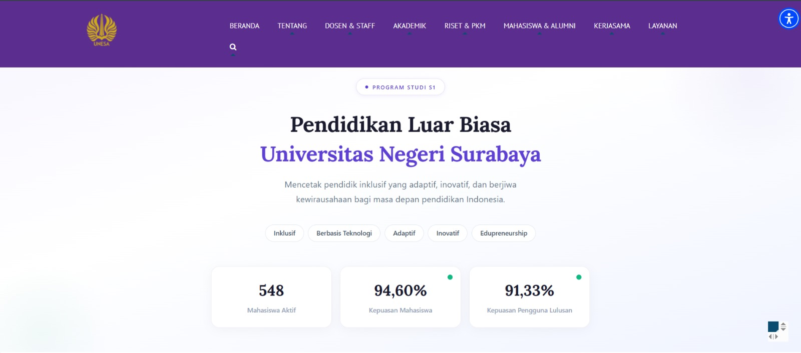
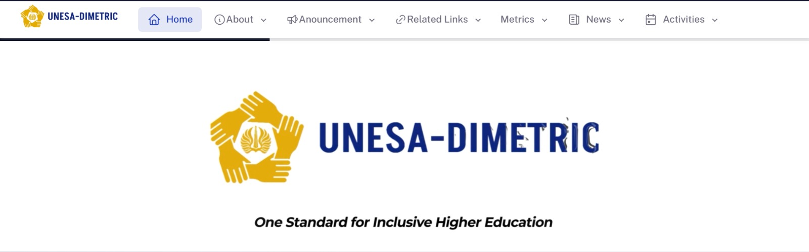

Media Pembelajaran & Web
DysCare v3
Media pembelajaran berbasis web yang dirancang khusus untuk membantu siswa penyandang disleksia belajar membaca dengan lebih mudah dan interaktif.
Halo, aku
Accessibility Specialist & Inclusive Designer — dari dunia Pendidikan Khusus ke dunia teknologi.
Membuktikan bahwa teknologi inklusif tidak harus membosankan — justru bisa elegan, hangat, dan modern.

Accessibility Specialist &
Inclusive Designer
Saya lulusan S1 Pendidikan Khusus dari Universitas Negeri Surabaya (UNESA) yang memilih untuk terjun ke dunia teknologi dengan membawa perspektif unik: bagaimana membuat teknologi lebih inklusif.
Spesialisasi saya ada di persimpangan antara Accessibility (a11y), UI/UX Design, dan pengembangan Media Pembelajaran. Kombinasi ini sangat langka di Indonesia — dan itulah keunikan saya.
Di luar dunia koding dan desain, saya juga sangat meminati Videografi, Fotografi, dan Editing. Saya juga memiliki ketertarikan kuat dalam bidang Bisnis dan rutin bereksperimen dengan Mini Projects di GitHub.
Gabungan unik antara latar belakang pendidikan inklusif, UI/UX Design, dan kemampuan teknis modern.
Proyek-proyek yang mencerminkan passion saya terhadap teknologi inklusif dan desain yang bermakna.

Media pembelajaran berbasis web yang dirancang khusus untuk membantu siswa penyandang disleksia belajar membaca dengan lebih mudah dan interaktif.

Platform inovatif berbasis web untuk menjembatani komunikasi dan memfasilitasi pembelajaran Bahasa Isyarat secara interaktif dan inklusif.

Eksperimen pemanfaatan kecerdasan buatan (Large Language Model) khusus untuk pemrosesan dan penerjemahan Bahasa Isyarat Indonesia (BSINDO).

Website resmi program studi Pendidikan Khusus UNESA yang saya kelola, optimalkan SEO-nya, dan tingkatkan aksesibilitas layanannya.

Kumpulan pencapaian, publikasi, dan keikutsertaan saya dalam berbagai program pengembangan diri, bootcamp, dan kompetisi.
Kumpulan pencapaian, hak kekayaan intelektual, serta dokumen legalitas profesional saya.
Dicoding Indonesia · 2026
Dicoding Indonesia · 2026
Universitas Negeri Surabaya (UNESA) · 2022
Hak Kekayaan Intelektual
Setiap pengalaman membentuk perspektif unik saya terhadap teknologi dan manusia.
Rekam jejak dan momen-momen penting selama perjalanan karir dan proyek saya.
Segera Diunggah
(Foto Dokumentasi 1)
Segera Diunggah
(Foto Dokumentasi 2)
Segera Diunggah
(Foto Dokumentasi 3)
Punya proyek, pertanyaan, atau ingin berkolaborasi? Saya senang mendengar dari Anda.